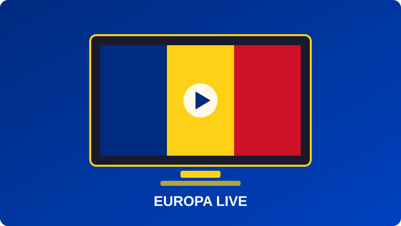
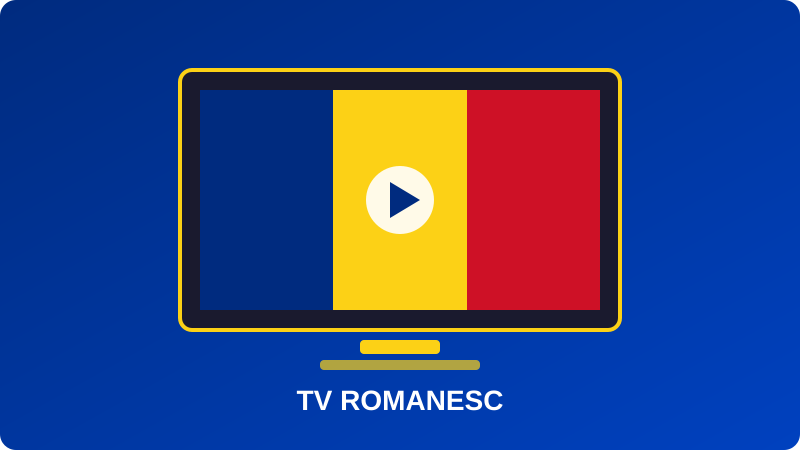

Esti la sute de kilometri de casa, intr-un oras din Germania, Italia sau Spania, iar seara iti doresti doar sa vezi jurnalul de stiri in limba ta si un film bun. Cablul local nu are canale romanesti, parabola e interzisa de asociatia de locatari, iar aplicatiile gratuite se opresc exact cand incepe emisiunea. In astfel de momente, multi romani scriu in Google euro iptv, in speranta ca gasesc o solutie simpla si stabila.
In acest ghid explicam clar ce inseamna euro iptv, cum functioneaza televiziunea prin internet in Europa, ce canale romanesti poti avea, ce viteza de internet iti trebuie si cum configurezi totul pe televizor, box sau telefon. Vorbim si despre problemele frecvente si despre cum alegi un furnizor serios, fara surprize.
Articolul este scris pentru romanii de acasa si din diaspora. Echipa Romania IPTV primeste zilnic intrebari despre acest subiect, iar mai jos le-am adunat pe cele mai importante. Pentru o introducere generala, citeste si iptv romania.

Cuprins
- Ce este euro iptv si de ce il cauta romanii
- Cum functioneaza euro iptv in practica
- Ce canale romanesti poti vedea in Europa
- Cum configurezi euro iptv pe fiecare dispozitiv
- Ce viteza de internet ai nevoie
- Euro iptv pentru diaspora: acasa, oriunde te-ai afla
- Probleme frecvente la euro iptv si solutii
- Cum alegi un furnizor euro iptv de incredere
- Sfaturi practice pentru o experienta fara griji
- Intrebari frecvente
- Concluzie
Ce este euro iptv si de ce il cauta romanii
Expresia euro iptv are doua sensuri in cautarile oamenilor. Unii vor un serviciu de televiziune prin internet care functioneaza in toata Europa. Altii se gandesc la competitiile de fotbal din Europa si vor sa le urmareasca live. In ambele cazuri, ideea de baza este aceeasi: televiziune pe internet, fara antena si fara parabola, disponibila oriunde ai o conexiune buna.
Pentru romanii care lucreaza in Germania, Italia, Spania, Franta sau Marea Britanie, un astfel de serviciu inseamna ca vad aceleasi canale ca acasa. Nu mai depind de un cablu local sau de un abonament in alta limba. Dechizi aplicatia si ai Pro TV, Antena 1, Kanal D si canalele de stiri exact ca in Romania.
Televiziunea prin internet, pe scurt
IPTV inseamna ca imaginea ajunge la tine prin protocolul internetului, nu prin unde radio sau cablu coaxial. Furnizorul preia canalele, le comprima si le trimite catre aplicatia ta. Tu ai nevoie doar de o conexiune stabila si de un dispozitiv compatibil.
De ce Europa este o piata speciala
Europa are zeci de limbi si drepturi TV diferite de la o tara la alta. Tocmai de aceea comunitatile din diaspora cauta un serviciu dedicat limbii lor. Un abonament euro iptv gandit pentru romani rezolva problema: lista este in romana, suportul vorbeste romaneste, iar canalele sunt cele pe care le stii.
Cum functioneaza euro iptv in practica
Pentru a folosi un serviciu euro iptv ai nevoie de patru lucruri: internet, un dispozitiv, o aplicatie si datele de acces primite de la furnizor. Dupa ce le ai, configurarea dureaza cateva minute si nu necesita cunostinte tehnice.
Traseul semnalului
Canalul este preluat la sursa, trimis catre serverele furnizorului si apoi livrat aplicatiei tale. Daca serverele sunt bine dimensionate, intarzierea fata de televiziunea clasica este de doar cateva secunde. Daca sunt suprasolicitate, apar blocaje, mai ales in seara meciurilor mari.
Ce inseamna lista de canale si ghidul de program
Lista contine canalele grupate pe categorii: general, stiri, filme, copii, sport, muzica. Ghidul de program, numit EPG, arata ce ruleaza acum si ce urmeaza. Daca vrei sa intelegi mai bine aceasta functie, citeste articolul despre epg iptv.
Ce nu ai nevoie
Nu ai nevoie de parabola, de receptor satelit sau de instalator. Un televizor modern, un box Android sau chiar telefonul sunt suficiente. Asta face serviciul potrivit pentru cei care se muta des sau stau in chirie.
Ce canale romanesti poti vedea in Europa
Un bun serviciu euro iptv pentru romani trebuie sa acopere nevoile intregii familii. Lista tipica include canale generaliste, stiri, filme, desene animate, muzica si sport. Disponibilitatea exacta difera de la un pachet la altul, asa ca este bine sa ceri lista completa inainte de plata.
| Categorie | Exemple de canale | Pentru cine |
|---|---|---|
| Generaliste | Pro TV, Antena 1, Kanal D, Prima TV | Toata familia |
| Stiri | Digi24, Antena 3, Realitatea Plus | Adulti, diaspora |
| Sport | Digi Sport, Prima Sport, Eurosport | Fani de fotbal si tenis |
| Copii | Canale cu desene dublate in romana | Familii cu copii |
Canale pentru toata familia
Copiii invata si pastreaza limba romana urmarind desene dublate, iar parintii ramane la curent cu emisiunile si telenovelele preferate. Pentru exemple de canale grupate pe categorii, vezi ghidul canale iptv romania.
Sport european in aceeasi lista
Pentru fani, euro iptv inseamna si competitii europene de fotbal, tenis sau Formula 1. Ce poti vedea depinde de drepturile din sezonul curent. Pentru un exemplu concret despre cum functioneaza sportul live, citeste espn iptv.
Cum configurezi euro iptv pe fiecare dispozitiv
Configurarea este simpla si seamana pe toate dispozitivele. Primesti de la furnizor un link sau date de autentificare, le introduci in aplicatie si lista de canale se incarca singura.
Smart TV si Android TV
Descarca o aplicatie compatibila din magazinul televizorului. Alege optiunea de adaugare a unei liste, introdu datele primite si asteapta incarcarea canalelor. Daca televizorul este mai vechi, un box extern rezolva problema.
Android box, Fire Stick si Apple TV
Un box dedicat ofera cea mai buna stabilitate. Daca nu stii ce model sa alegi, ghidul despre android box iptv te ajuta sa compari variantele.
Telefon, tableta si calculator
Aplicatiile pentru Android si iOS iti permit sa vezi canalele in deplasare, in tren sau in pauza de la serviciu. Pe calculator poti folosi un player care accepta liste de canale.

Ce viteza de internet ai nevoie
Calitatea imaginii depinde direct de conexiune. Pentru un serviciu euro iptv recomandam urmatoarele valori orientative, pe un singur ecran:
- SD: aproximativ 3 Mbps
- HD: minimum 10 Mbps
- Full HD si sport rapid: 15 Mbps sau mai mult
- 4K: 25 Mbps sau mai mult
Cablu sau Wi-Fi
Cablul de retea este mereu mai stabil. Daca nu poti trage cablu, plaseaza routerul aproape de televizor sau foloseste un adaptor pe priza electrica. Banda de 5 GHz este de obicei mai buna decat cea de 2,4 GHz pentru streaming.
Mai multe dispozitive in aceeasi casa
Daca doua televizoare si un telefon ruleaza simultan, aduna consumul. O familie de patru persoane are nevoie de o conexiune generoasa, mai ales seara. Verifica si cate conexiuni simultane permite abonamentul tau.
Euro iptv pentru diaspora: acasa, oriunde te-ai afla
Pentru romanii din strainatate, un serviciu euro iptv este mai mult decat divertisment. Este o legatura zilnica cu limba, stirile si obiceiurile de acasa. Multe familii pornesc televizorul seara doar pentru a avea zgomotul familiar al canalelor romanesti in fundal.
Fusul orar si programul
Romania este cu o ora inaintea Germaniei si a Italiei si cu doua ore inaintea Marii Britanii. Seteaza corect fusul orar in aplicatie, altfel ghidul de program va afisa ore gresite.
Servicii pentru alte comunitati
Aceeasi idee exista si pentru alte natiuni din Europa. De exemplu, greek iptv si tilaa iptv servesc comunitati care vor televiziune in limba lor, in afara tarii de origine.
Continut pentru toate varstele
Bunicii prefera stirile si emisiunile clasice, adultii urmaresc filme si sport, iar copiii au desene. Un abonament bun acopera toate aceste nevoi, iar pentru mai multe idei de organizare citeste iptv europe si emby iptv.
Probleme frecvente la euro iptv si solutii
Orice serviciu de streaming poate avea probleme punctuale. Majoritatea se rezolva in cateva minute daca stii unde sa cauti.
Imaginea se blocheaza
Verifica viteza internetului, treci pe cablu si reporneste aplicatia. Daca problema apare doar pe un canal, anunta furnizorul, pentru ca poate fi o problema de sursa.
Canalul nu se incarca
Actualizeaza lista din aplicatie si reporneste dispozitivul. Daca tot nu merge, cere un link alternativ de la suport.
Sunetul si imaginea nu sunt sincronizate
Schimba playerul intern sau activeaza setarea de sincronizare audio. Majoritatea aplicatiilor au aceasta optiune in meniul de redare.
Cum alegi un furnizor euro iptv de incredere
Piata este plina de oferte, iar diferentele de calitate sunt mari. Inainte sa platesti pentru un serviciu euro iptv, verifica cateva puncte esentiale.
Lista de verificare
- Cere un test gratuit si ruleaza-l in orele de seara.
- Intreaba ce canale romanesti sunt incluse.
- Verifica daca suportul raspunde in limba romana.
- Afla cate dispozitive poti folosi simultan.
- Alege o plata flexibila, fara contracte lungi.
De ce Romania IPTV
Romania IPTV este construit pentru publicul vorbitor de romana, din tara si din diaspora. Primesti lista de canale nationale, sport si suport direct pe WhatsApp. Pentru o privire de ansamblu asupra serviciului, citeste iptv romania.
Pret si transparenta
Un pret extrem de mic, fara explicatii, este un semnal de alarma. Un furnizor serios afiseaza clar ce primesti si cat costa pe luna sau pe an. Compara si ghidul best iptv europe pentru criterii suplimentare.
Sfaturi practice pentru o experienta fara griji
Cateva obiceiuri simple fac diferenta intre un serviciu care merge perfect si unul care te streseaza. Aplica-le de la inceput si vei evita cele mai multe neplaceri legate de euro iptv.
Pregateste reteaua de acasa
Plaseaza routerul intr-un loc deschis, nu in dulap, si reporneste-l din cand in cand. Daca locuiesti intr-un bloc aglomerat, canalul Wi-Fi poate fi suprapus cu al vecinilor, iar schimbarea lui aduce imbunatatiri vizibile. Un router modern cu banda dubla ajuta mult.
Tine aplicatia actualizata
Actualizarile corecteaza erori si imbunatatesc compatibilitatea cu noile versiuni de sistem. Verifica periodic magazinul de aplicatii si pastreaza la indemana datele de acces, ca sa le poti reintroduce repede daca resetezi dispozitivul.
Foloseste o varianta de rezerva
Instaleaza aplicatia si pe telefon. Daca televizorul sau boxul are o problema chiar inainte de emisiunea preferata, ai imediat o alternativa. Este un obicei mic, dar salveaza multe seri.
Organizeaza lista de canale
Daca lista este prea lunga, ascunde categoriile pe care nu le folosesti si marcheaza favoritele. Pentru sport si meciuri live citeste ghidul espn iptv.
Cere ajutor cand ai nevoie
Nu pierde ore intregi incercand sa rezolvi singur o problema tehnica. Un furnizor bun raspunde rapid pe WhatsApp, in limba romana, si te ghideaza pas cu pas. Descrie clar dispozitivul, aplicatia si mesajul de eroare, iar raspunsul va veni mai repede.
Intrebari frecvente
Ce inseamna euro iptv?
Este un serviciu de televiziune prin internet care functioneaza in tarile europene. Pentru romani, inseamna acces la canalele din Romania de oriunde din Europa.
Functioneaza euro iptv in toate tarile din Europa?
Da, atata timp cat ai o conexiune stabila la internet. Serviciul nu depinde de antena sau de parabola din zona ta.
Ce canale romanesti pot vedea?
Canale generaliste, de stiri, filme, copii, muzica si sport. Lista exacta depinde de pachet, asa ca cere-o pe WhatsApp inainte de abonare.
Ce viteza de internet am nevoie?
Minimum 10 Mbps pentru HD si 25 Mbps pentru 4K. Pentru stabilitate, foloseste cablu de retea.
Pot folosi serviciul pe telefon si pe televizor?
Da. Aceleasi date de acces functioneaza pe Smart TV, box Android, telefon, tableta si calculator, in limita conexiunilor din abonament.
Este legal un serviciu IPTV?
Tehnologia IPTV este legala. Important este ca furnizorul sa fie serios si sa respecte regulile din tara ta. Evita listele gratuite si neverificate.
Exista test gratuit?
Da, poti cere un test pe WhatsApp, fara card si fara contract, ca sa verifici calitatea inainte de abonament.
Cum primesc suport daca am o problema?
Scrie echipei pe WhatsApp. Raspunsul este in limba romana, iar echipa te ajuta cu configurarea pe orice dispozitiv.
Testeaza gratuit canalele romanesti in Europa
Scrie-ne pe WhatsApp si primesti acces de test, fara card si fara contract.
Cere testul pe WhatsAppConcluzie
Pe scurt, euro iptv este solutia moderna pentru romanii care vor sa vada televiziunea din tara oriunde in Europa. Ai nevoie de internet stabil, un dispozitiv compatibil si un furnizor de incredere, cu lista clara de canale si suport in limba romana.
Daca vrei sa incerci, scrie-ne pe WhatsApp si cere un test gratuit cu Romania IPTV. Mai multe ghiduri gasesti in blog.